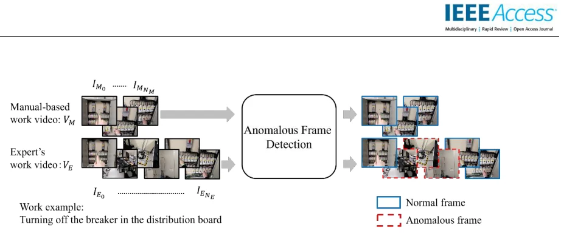
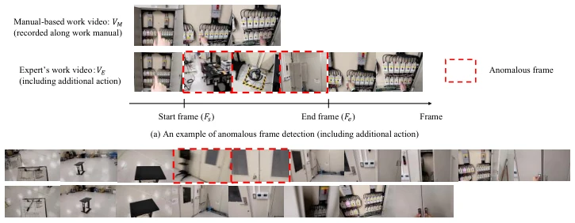
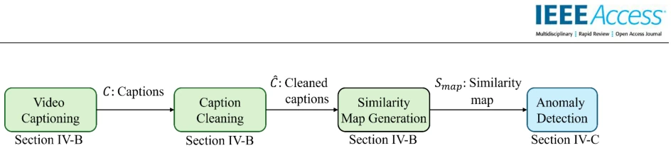
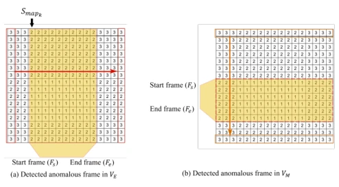
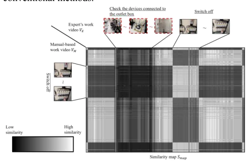

Anomalous Frame Detection by Grouping Frame Similarities between Two Videos Computed by Vision-Language Model to Extract Expert Workers' Unique Actions
This paper attempts to mine the tacit knowledge of experienced masters using a "spot the difference" approach, with a rather unconventional logic: since experienced masters have "secret techniques" when working, they must differ from the manual; difference equals "anomaly", capturing it yields knowledge. Methodologically, it avoids complex training, directly using an off-the-shelf VLM to generate captions, calculating a similarity matrix, and then finding "low-score" regions. The results indeed show a 50 percentage point increase over traditional baselines (e.g., HLLM), and the 66.9% accuracy appears quite promising. However, we must temper expectations: the experiment scale is too small, only 11 pairs of videos, simulated panel maintenance, single scenario. Moreover, the definition of "anomaly" relies too heavily on manual presets (whether an action was added or omitted); if the master simply had a hand tremor and was half a beat slower, can this method distinguish between "tacit knowledge" and "manual clumsiness"? Additionally, generating captions at full frame rate and then calculating similarity, the computational load is estimated to explode, and it may not run in a real factory. Overall, it is an interesting Zero-shot attempt, but there is still a distance from true industrial implementation; do not mistake "finding differences" for the entirety of "domain expertise".
Infrastructure maintenance (e.g., railways, power plants) faces severe challenges of skilled worker shortages, urgently requiring expert experience (Tacit Knowledge) to be made explicit and taught to novices. Traditional methods relying on interviews (e.g., References [4][6][7][10]) have fatal flaws: experts often cannot be aware of their subconscious operational details, or cannot accurately describe them in language, leading to the loss of a large amount of tacit knowledge. Existing video difference detection technologies (e.g., References [12][13][14]), although capable of detecting significant differences, mostly rely on training with large-scale domain-specific data, while public data in the maintenance field is scarce and collection costs are extremely high, making direct application difficult. Furthermore, existing VLM video understanding methods (e.g., References [17][18]) typically require predefined action categories or text prompts, lacking generalization ability for unknown tacit actions. Therefore, this study aims to propose a training-free, Zero-shot (Zero-shot) method, by comparing videos of "operating according to the manual" with videos of "expert operation", automatically capturing experts' unique "anomalous" actions (such as extra steps or omitted steps), thereby extracting tacit knowledge.

FIGURE 1. Conceptual flow diagram illustrating the process of extracting candidate actions containing expert know-how from both the manual-based work video 𝑽𝑴 and the expert’s work video 𝑽𝑬.

FIGURE 2. Examples of the manual-based work video (𝑽𝑴), the expert’s work video (𝑽𝑬) and the start frame (𝑭𝒔) and end frames (𝑭𝒆) to be detected. (a) An example of anomalous frame detection (including additional action). (b) An example of anomalous frame detection (with skipping action).
方法Method
本文提出了一种基于预训练Vision-Language Model (VLM) 的异常帧检测框架，核心逻辑是构建相似度地图并过滤低分区域。整体Pipeline分为两步： 1. 相似度地图生成：输入说明书视频$V_M$和专家视频$V_E$。首先利用Captioning模型（BLIP-2）为每一帧生成描述文本。为了解决单帧描述噪声问题，引入“清洗”步骤：利用ImageBind的图像编码器和文本编码器，将图像与所有候选文本映射到同一潜在空间，为每帧选择相似度最高的文本作为“清洗后”的Caption。随后，利用文本编码器将清洗后的Caption转化为向量，计算$V_M$和$V_E$所有帧对之间的余弦相似度，构建$N_M imes N_E$的相似度矩阵$S_{map}$。若某动作仅存在于一个视频中，其在矩阵中对应的行或列将呈现低相似度区域。 2. 异常帧过滤：基于$S_{map}$检测异常。计算每列（或每行）的最大相似度，并求全局平均最大相似度$MaxAve$。设定阈值$ au$，若某帧的最大相似度低于$ au imes MaxAve$，则判定为异常帧。通过遍历矩阵，提取连续异常帧的起始帧$F_s$和结束帧$F_e$。该方法不依赖特定动作类别，而是利用全局相似性分布特征来定位差异，且对视频时间轴上的微小错位（如速度差异）具有鲁棒性。
This paper proposes an anomaly frame detection framework based on a pre-trained Vision-Language Model (VLM), with the core logic being the construction of a similarity map and filtering of low-score regions. The overall Pipeline is divided into two steps: 1. Similarity Map Generation: Input manual video $V_M$ and expert video $V_E$. First, use a Captioning model (BLIP-2) to generate descriptive text for each frame. To solve the single-frame description noise problem, introduce a "cleaning" step: Utilize ImageBind's image encoder and text encoder to map images and all candidate texts to the same latent space, selecting the text with the highest similarity for each frame as the "cleaned" Caption. Subsequently, use the text encoder to convert the cleaned Captions into vectors, calculate the cosine similarity between all frame pairs of $V_M$ and $V_E$, and construct the $N_M imes N_E$ similarity matrix $S_{map}$. If an action exists only in one video, the corresponding row or column in the matrix will show low similarity regions. 2. Anomaly Frame Filtering: Detect anomalies based on $S_{map}$. Calculate the maximum similarity for each column (or row), and compute the global average maximum similarity $MaxAve$. Set a threshold $ au$; if the maximum similarity of a frame is lower than $ au imes MaxAve$, it is judged as an anomaly frame. By traversing the matrix, extract the start frame $F_s$ and end frame $F_e$ of continuous anomaly frames. This method does not rely on specific action categories, but uses global similarity distribution features to locate differences, and is robust to minor misalignments on the video timeline (such as speed differences).

FIGURE 3. Flowchart of the proposed method. The proposed method consists of the following two steps: (1) Generate a similarity map whose elements represent the similarities between each pair of frames from the manual-based work video 𝑽𝑴 and expert’s work video 𝑽𝑬. In this similarity map, if a certain action appears only in one of the videos, it is expected to form a region with low similarity to all frames of the other video. (2) Identify regions of low similarity in the map and detect the corresponding frames as those containing actions that occur only in one of the videos.

FIGURE 5. Conceptual diagram of filtering to 𝑺𝒎𝒂𝒑. (a) An example of anomalous frames detecting in 𝑽𝑬. (b) An example of anomalous frames detecting in 𝑽𝑴.
实验Experiments
实验在模拟的配电板维护任务上进行，共收集11对视频数据（包含5对任务1和6对任务2），涉及添加动作（如检查插座盒）和省略动作（如跳过检查门）两种异常类型。评测指标采用IoU（Intersection over Union）衡量提取区间与真值的重合度，并统计错误帧数。基线方法包括基于HLLM（BLIP-2+Llama3）和InternVideo2+Llama3的现有视频差异检测方案。结果显示，本文方法IoU达到66.9%，比最佳基线高出约50个百分点，且错误帧数显著减少。消融实验表明，引入Caption清洗步骤将IoU从61.7%提升至66.9%。敏感性分析发现阈值$ au=0.6$时综合表现最佳，过低会导致漏检，过高则引入过多误报。尽管结果显著，但实验规模较小且场景单一，且未测试长视频或复杂光照下的实时性。
Experiments were conducted on a simulated panel maintenance task, collecting a total of 11 pairs of video data (including 5 pairs for Task 1 and 6 pairs for Task 2), involving two anomaly types: added actions (e.g., checking the socket box) and omitted actions (e.g., skipping the inspection door). Evaluation metrics use IoU (Intersection over Union) to measure the overlap between the extracted interval and the ground truth, and count the number of error frames. Baseline methods include existing video difference detection schemes based on HLLM (BLIP-2+Llama3) and InternVideo2+Llama3. Results show that the proposed method's IoU reaches 66.9%, which is about 50 percentage points higher than the best baseline, and the number of error frames is significantly reduced. Ablation studies indicate that introducing the Caption cleaning step improved IoU from 61.7% to 66.9%. Sensitivity analysis found that the comprehensive performance is best when threshold $ au=0.6$; too low leads to missed detection, too high introduces too many false positives. Although the results are significant, the experiment scale is small and the scenario is single, and real-time performance under long videos or complex lighting was not tested.

FIGURE 6. Example of similarity map 𝑺𝒎𝒂𝒑 generated using the proposed method from 𝑽𝑴 and 𝑽𝑬.